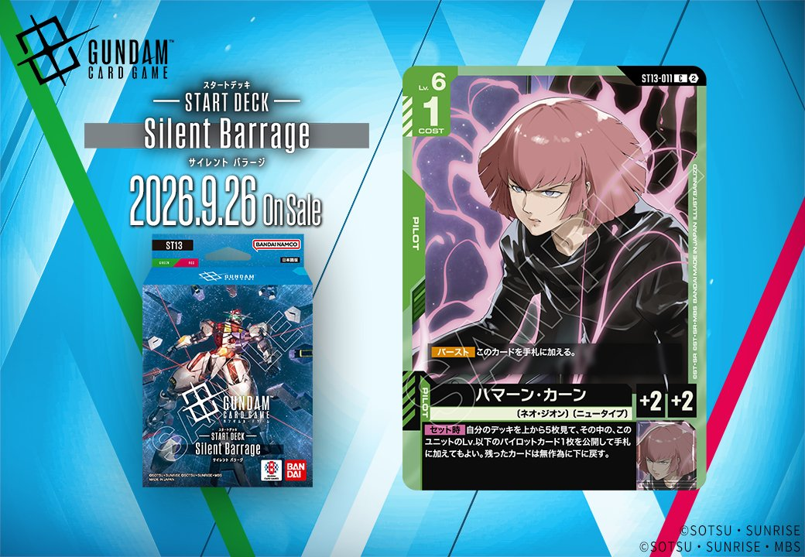
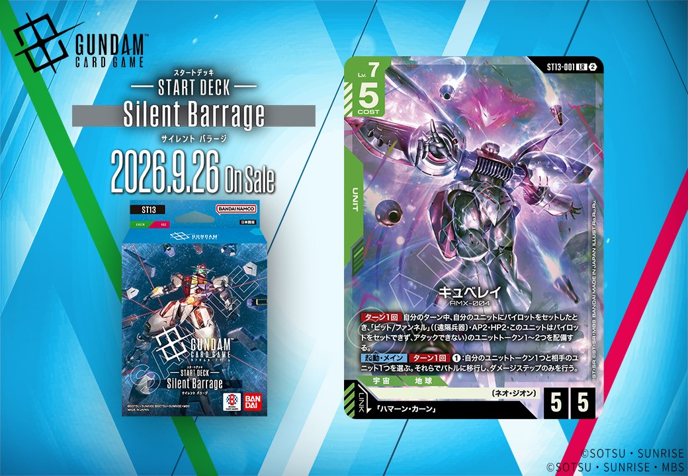
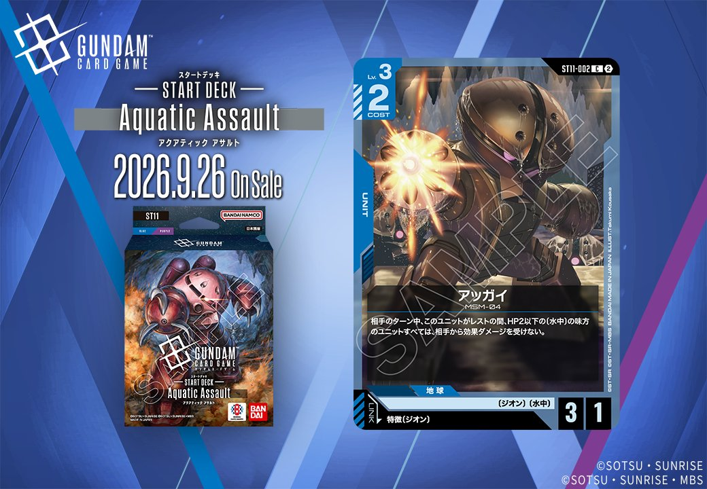
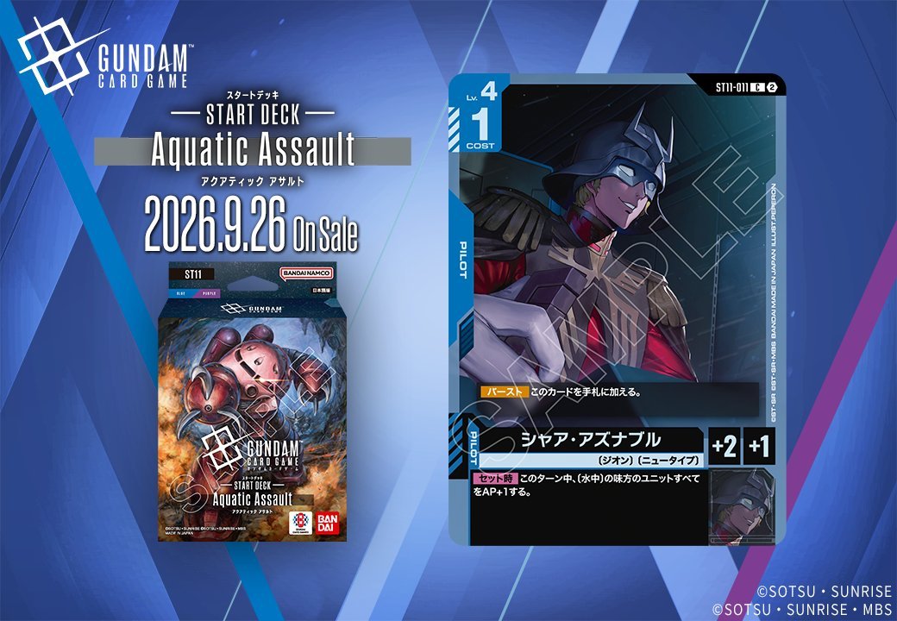
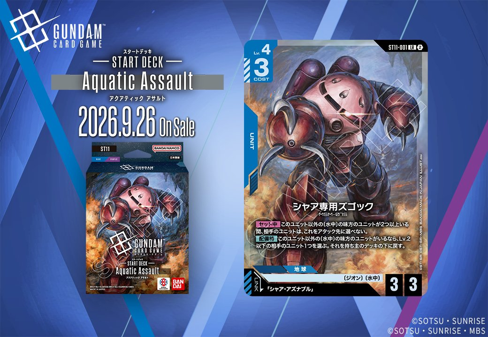

今回は2026年9月26日発売の2つのセット、ST13「Generation Pulse」からハマーン・カーン(ST13-011)とキュベレイ(ST13-001)、ST11から3枚のカードが同日公開されました。緑のPILOT「ハマーン・カーン」とリンク条件「ハマーン・カーン」を持つUNIT「キュベレイ」、青のPILOT「シャア・アズナブル」(ST11-011)とリンク条件を満たすUNIT「アッガイ」(特徴にジオンを持つPILOT)・「シャア専用ズゴック」といった、同日公開のUNITとPILOTがリンクで結ばれる組合せが揃っており、対応するPILOTとUNITを合わせて運用できる点が実戦上の意義となります。

ハマーン・カーン (ST13-011)
| 色 | 緑 | タイプ | PILOT |
| Lv | 6 | コスト | 1 |
| 補正 AP | 2 | 補正 HP | 2 |
| 特徴 | 〔ネオ・ジオン〕、〔ニュータイプ〕 | ||
効果: 【バースト】このカードを手札に加える。【セット時】自分のデッキを上から5枚見て、その中の、このユニットのLv.以下のパイロットカード1枚を公開して手札に加えてもよい。残ったカードは無作為に下に戻す。
COST1でAP2/HP2のパイロットながら、【セット時】に自分のデッキ上5枚からLv.6以下のパイロット1枚を手札に加えられ、緑のニュータイプ勢を安定して集められる点が実用的です。同日公開の「キュベレイ」(ST13-001)にセットすればリンクが成立し、リンク中のユニットとしてビット/ファンネルトークンによる盤面形成と併用できます。 2026-09-26発売。ハズレ時も残りは無作為に下へ戻すため序盤からの手札補充要員として無理なく採用できます。

キュベレイ (ST13-001)
| 色 | 緑 | タイプ | UNIT |
| Lv | 7 | コスト | 5 |
| AP | 5 | HP | 5 |
| 特徴 | 〔ネオ・ジオン〕 | ||
| リンク条件 | 「ハマーン・カーン」 | ||
効果: ターン1回 自分のターン中、自分のユニットにパイロットをセットしたとき、「ビット/ファンネル」((遠隔兵器) AP2・HP2・このユニットはパイロットをセットできず、アタックできない)のユニットトークン1～2つを配備する。【起動・メイン】ターン1回:自分のユニットトークン1つと相手のユニット1つを選ぶ。それらでバトルに移行し、ダメージステップのみを行う。
キュベレイ(ST13-001)はLv.7/COST5でAP5/HP5の緑ユニット。自分のターン中にパイロットをセットするたびにターン1回「ビット/ファンネル」トークン1～2つを配備でき、【起動・メイン】でトークンと相手ユニットのダメージステップのみのバトルを行える点が特徴です。 リンク先の「ハマーン・カーン」(ST13-011)は【セット時】にデッキ上5枚からLv.以下のパイロットをサーチできるため、同一ユニット上での運用と相性が良く、パイロットセットを軸にトークン展開を狙う構築に向きます。2026-09-26発売。



アッガイ (ST11-002)
| 色 | 青 | タイプ | UNIT |
| Lv | 3 | コスト | 2 |
| AP | 3 | HP | 1 |
| 特徴 | 〔ジオン〕、〔水中〕 | ||
| リンク条件 | 特徴にジオンを持つPILOT | ||
効果: 相手のターン中、このユニットがレストの間、HP2以下の〔水中〕の味方のユニットすべては、相手から効果ダメージを受けない。
アッガイ(ST11-002)はCOST2でAP3/HP1、相手のターン中にこのユニットがレストの間、HP2以下の〔水中〕味方ユニットすべてを相手の効果ダメージから守る防御的な効果を持つ。自身のHP1と守れる範囲がHP2以下に限られるため、〔水中〕を並べた盤面での運用が前提になる。 リンクは特徴にジオンを持つパイロットで、同日公開のシャア・アズナブル(ST11-011)はリンク条件が成立する組合せ。シャアの【セット時】で〔水中〕味方すべてをAP+1でき、アッガイのレスト時常駐効果と併せて攻守両面で〔水中〕デッキの構築親和性が高い。2026-09-26発売。



シャア・アズナブル (ST11-011)
| 色 | 青 | タイプ | PILOT |
| Lv | 4 | コスト | 1 |
| 補正 AP | 2 | 補正 HP | 1 |
| 特徴 | 〔ジオン〕、〔ニュータイプ〕 | ||
効果: 【バースト】このカードを手札に加える。【セット時】このターン中、〔水中〕の味方のユニットすべてをAP+1する。
COST1でAP2/HP1のジオン・ニュータイプ持ちパイロット。【セット時】で〔水中〕の味方ユニットすべてをこのターンAP+1する点が特徴で、水中軸のユニットを並べるほど恩恵が大きくなる。 同日公開のアッガイ(ST11-002)とはリンク条件が成立し、同一ユニット上で運用できる。アッガイの【リンク中】効果はHP2以下の〔水中〕味方を相手の効果ダメージから守る常駐効果で、水中デッキで両者を併用する構築上の親和性がある。 2026-09-26発売。【セット時】の一時パンプと【リンク中】の常駐防御はトリガータイミングが異なるため同時発動ではなく、それぞれ独立して機能する点に注意したい。



シャア専用ズゴック (ST11-001)
| 色 | 青 | タイプ | UNIT |
| Lv | 4 | コスト | 3 |
| AP | 3 | HP | 3 |
| 特徴 | 〔ジオン〕、〔水中〕 | ||
| リンク条件 | 「シャア・アズナブル」 | ||
効果: 【セット中】このユニット以外の〔水中〕の味方のユニットが2つ以上いる間、相手のユニットは、これをアタック先に選べない。【配備時】このユニット以外の〔水中〕の味方のユニットがいるなら、Lv.2以下の相手のユニット1つを選ぶ。それを持ち主のデッキの下に戻す。
シャア専用ズゴック(ST11-001)はCOST3でAP3/HP3、〔水中〕の味方が2つ以上いる間、相手のユニットがこれをアタック先に選べなくなる【セット中】が特徴で、自身を疑似的に守れる耐性持ちです。【配備時】も他の〔水中〕がいればLv.2以下の相手ユニット1つをデッキの下に戻せるため、盤面展開の前提が揃うほど価値が高まります。 リンク相手の「シャア・アズナブル」(ST11-011)は【セット時】に〔水中〕の味方すべてをAP+1でき、このユニットに搭載すればリンク成立とAP補強を両立できます。ただし本体の【配備時】【セット中】とパイロットの【セット時】は別トリガーのため、〔水中〕を複数並べる構築を前提に運用したい2026-09-26発売のカードです。


関連カード
-
 シャア・アズナブル(ST03-011)緑系デッキ内採用率9% (419デッキ)
シャア・アズナブル(ST03-011)緑系デッキ内採用率9% (419デッキ) -
 シュウジ・イトウ(ST06-010)緑系デッキ内採用率0.6% (28デッキ)
シュウジ・イトウ(ST06-010)緑系デッキ内採用率0.6% (28デッキ) -
 ララァ・スン(GD02-089)緑系デッキ内採用率0.1% (3デッキ)
ララァ・スン(GD02-089)緑系デッキ内採用率0.1% (3デッキ) -
 シャリア・ブル（GQ）(GD02-090)緑系デッキ内採用率0.1% (3デッキ)
シャリア・ブル（GQ）(GD02-090)緑系デッキ内採用率0.1% (3デッキ) -
 バナージ・リンクス(ST14-012)NEW緑系 — 同色・共通特徴: ニュータイプ（新カード）
バナージ・リンクス(ST14-012)NEW緑系 — 同色・共通特徴: ニュータイプ（新カード） -
ハマーン・カーン(ST13-011)NEW緑系 — 同色・共通特徴: ネオ・ジオン（新カード）
-
 ウイングガンダムゼロ(GD01-024)緑系デッキ内採用率15.3% (713デッキ)
ウイングガンダムゼロ(GD01-024)緑系デッキ内採用率15.3% (713デッキ) -
 ウイングガンダム(ST02-001)緑系デッキ内採用率14.7% (682デッキ)
ウイングガンダム(ST02-001)緑系デッキ内採用率14.7% (682デッキ) -
 ヒイロ・ユイ(ST02-010)緑系デッキ内採用率14.6% (680デッキ)
ヒイロ・ユイ(ST02-010)緑系デッキ内採用率14.6% (680デッキ) -
 ピースミリオン(GD03-125)緑系デッキ内採用率14.2% (659デッキ)
ピースミリオン(GD03-125)緑系デッキ内採用率14.2% (659デッキ)